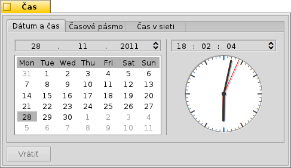
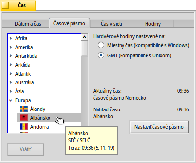
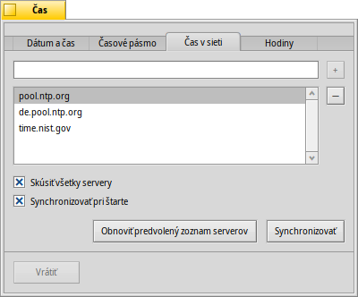
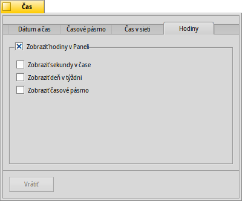

Slovenčina
Slovenčina Català
Català Deutsch
Deutsch English
English Español
Español Français
Français Italiano
Italiano Magyar
Magyar Polski
Polski Português
Português Português (Brazil)
Português (Brazil) Română
Română Suomi
Suomi Svenska
Svenska 中文 ［中文］
中文 ［中文］ Русский
Русский Українська
Українська 日本語
日本語 Čas
Čas
| Panel: | ||
| Umiestnenie: | /boot/system/preferences/Time | |
| Nastavenia: | ~/config/settings/networktime settings - Všetky nastavenia týkajúce sa synchronizácie času prostredníctvom siete ~/config/settings/RTC_time_settings - Nastavenie hardvérových hodín (miestny čas alebo GMT) ~/config/settings/Time settings - Nastavenie časového pásma ~/config/settings/Time_preflet_window - Pozícia okna panelu atď. |
Panel nastavení Času je rozdelený do štyroch kariet:
 Dátum a čas
Dátum a čas

Na ľavej strane môžete nastaviť deň mesiaca jednoduchým kliknutím naň v kalendári. Mesiac a rok môžete meniť kliknutím na ne a použitím šípok hore/dole napravo od kurzorových klávesov na vašej klávesnici.
Podobne sa vpravo nastavuje aj čas. Alebo priamo pohnite ručičkami hodín.
Časové pásmo

Jednoducho nájdite a vyberte vašu lokalitu v rozbaľovacom menu a zozname miest a stlačte tlačidlo . Krajiny s viac ako jedným časovým pásmom nájdete o jednu úroveň hlbšie.
Vpravo nájdete čas aktuálne nastaveného časového pásma a náhľad času v časovom pásme, ktoré ste vybrali.
Tiež na pravej strane je nastavenie hardvérových hodín vášho počítača. Hodiny majú dva režimy:
| zobrazovať váš miestny čas, čo typicky chcete, ak zároveň na tomto počítači spúšťate aj Windows. | ||
| zobrazovať Greenwich Mean Time, čo je voľba kompatibilná s UNIXom. |
Čas zo siete
Ak máte pripojenie k internetu, ručné nastavovanie dátumu a času je dosť zastaralé. Existujú verejné servery, ktoré poskytujú veľmi presné časové signály.
Pomocou tlačidiel / môžete pridať resp. odstrániť NTP servery zo zoznamu.
Zaškrtávacie polia dolu hovoria systému, že má na synchronizáciu , nie iba aktuálne vybraný server , aby ste si mohli byť istí, že hodiny vždy zobrazujú správny čas.
Môžete ak ste omylom zmazali fungujúce servery NTP a vaše hodiny ručne. Synchronizáciu je možné spustiť aj z príkazového riadka (alebo skriptu):
Time --update
Hodiny

Posledná karta zobrazuje voľby hodín zobrazených v Paneli. Môžete tieto hodiny úplne vypnúť zaškrtnutím poľa hore. Zvyšné voľby sú rovnako samovysvetľujúce.
Na každej karte sa nachádza tlačidlo , ktoré vráti nastavenia, ktoré boli aktívne v momente zapnutia nastavení Času.